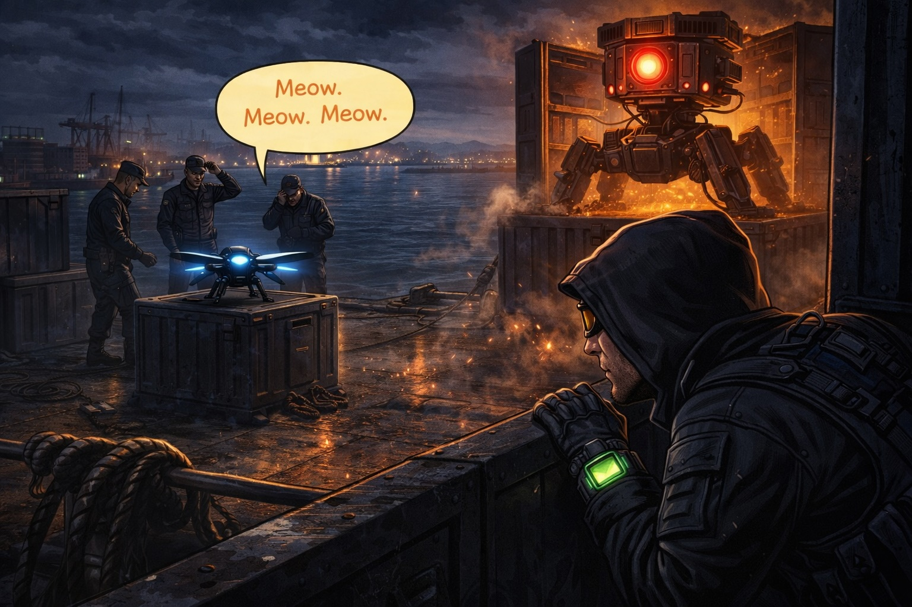

Chapter 2: The Silent Boarding
The mysterious ship drifted quietly through the dark water.
No lights.
No signal.
Just the low rumble of its engines as it moved toward Newcastle Harbour.
Agent Orion crouched near the edge of Nobbys Head and spoke softly into his watch.
"Headquarters, I'm going in."
"Copy that, Agent Orion," the voice replied. "Be careful. We're detecting security patrols on the ship."
Orion grinned.
"Good thing I don't like being noticed."
He pulled a small silver cylinder from his belt and fired it toward the side of the ship.
THWIP!
A grappling line shot across the water and hooked onto a metal ladder on the ship's hull.
Orion clipped his belt to the line.
Then he slid across the harbour wind like a shadow.
In seconds he reached the ship.
He climbed quietly onto the back deck.

The spy drone hovered beside him, its tiny wings buzzing softly.
Beep. Beep.
Three guards were walking across the deck.
They weren't looking for trouble.
They were just walking their patrol.
Orion whispered to the drone.
"Let's give them a little distraction."
The drone zipped away across the deck.
It landed on a crate.
Then it started playing something unexpected.
Meow. Meow. Meow.
The guards stopped.
"Did you hear that?" one of them said.
"A cat?" another guard said.
"In the middle of the ocean?"
All three guards walked toward the sound.
While they were looking around the crate, Orion quietly tiptoed across the deck behind them.
He reached a large stack of containers and ducked behind them.
"Nice work," he whispered to the drone.
The drone gave a proud little beep.
But then...
KRRRRRRRRR...
A loud mechanical rumble echoed across the ship.
Orion slowly peeked around the container.
The giant metal crate in the middle of the deck had begun to open.
Panels slid apart.
Cables sparked.
Inside, a huge machine began unfolding.

Metal legs.
Spinning sensors.
A glowing red eye.
Orion's watch crackled.
"Agent Orion," headquarters said nervously.
"That is definitely not normal cargo."
Orion nodded slowly.
"No," he whispered.
"That's trouble."
The machine lifted itself onto its metal legs.
Then its red sensor light turned.
And pointed directly at Orion.
The drone beeped nervously.
Orion sighed.
"Well..."
He pulled a small gadget from his pocket.
"Looks like we're about to find out what this thing does."